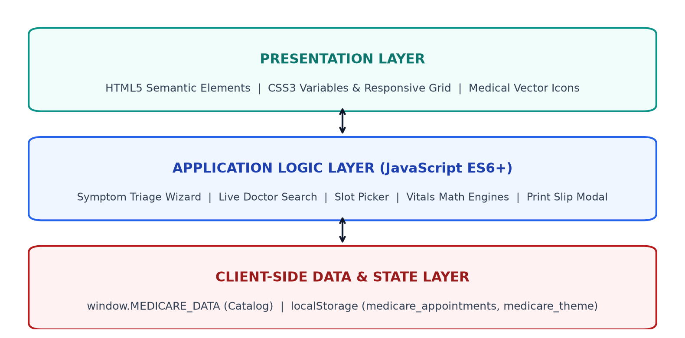
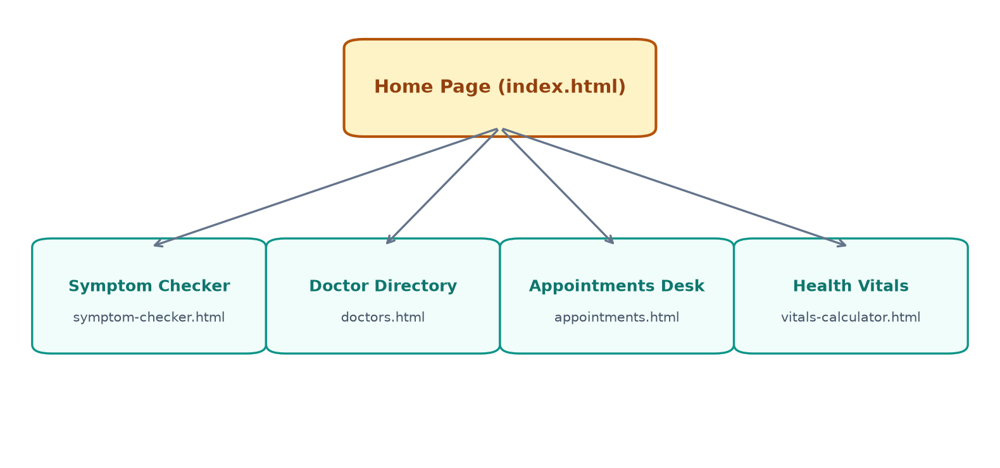
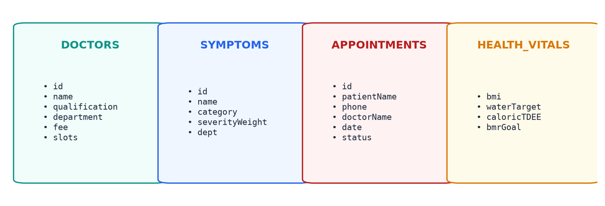
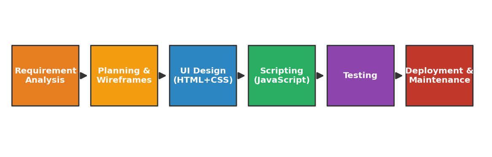
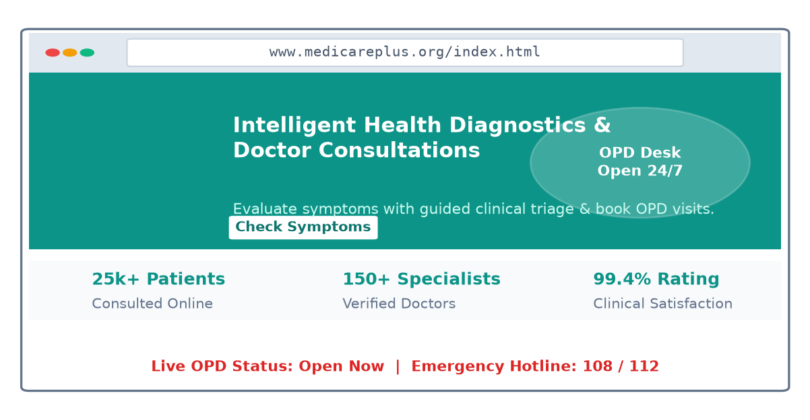
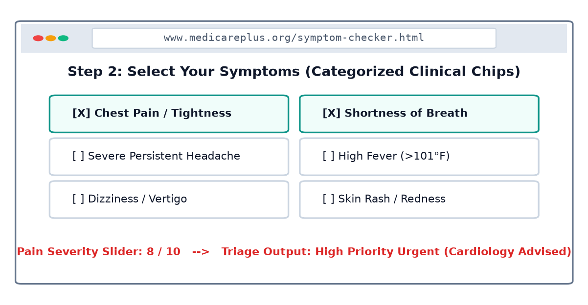
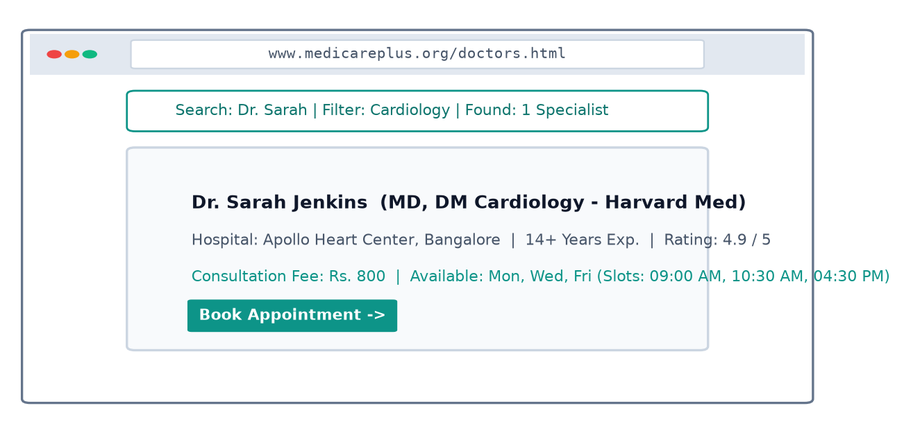
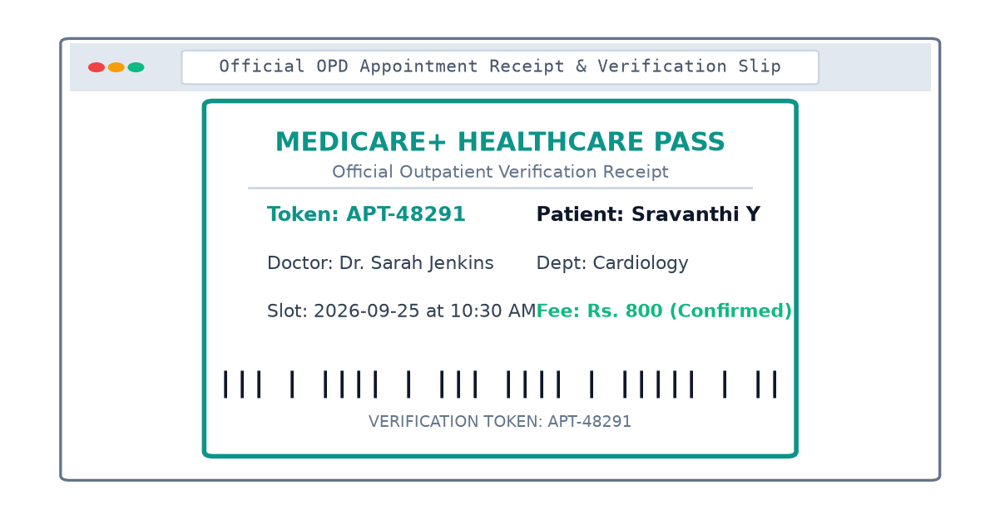
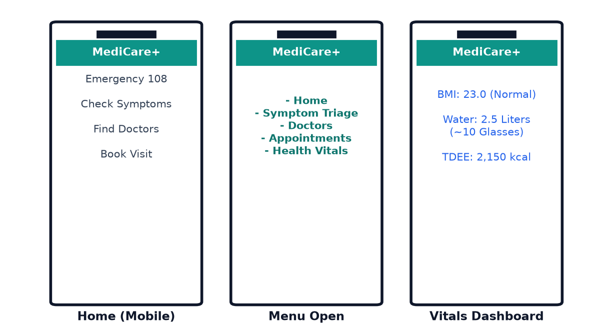
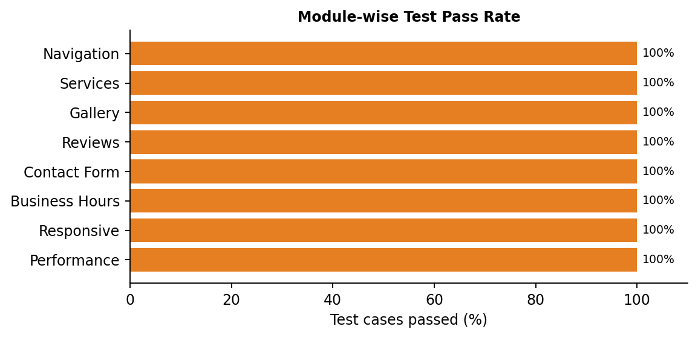

A Report submitted under Project-Based Learning
In Partial Fulfillment of the Course Requirements for
“Web Technologies (22IT104001)”
Submitted By
| SRAVANTHI | (24102A040629) |
| REKHA | (24102A040623) |
| VYSHNAVI | (24102A040619) |
Under the Guidance of
PATAN FERIDOZ KHAN M.Tech(Ph.D)
Assistant Professor
Department of CSE
Department of Computer Science and Engineering
School of Computing
MOHAN BABU UNIVERSITY
Sree Sainath Nagar, Tirupati – 517 102
2025-2026
To be a globally respected institution with an innovative and entrepreneurial culture that offers transformative education to advance sustainability and societal good.
To lead the advancement of computer science research and education that has real-world impact and to push the frontiers of innovation in the field.
To become a Centre of Excellence in Computer Science and its emerging areas by imparting high quality education through teaching, training and research.
After few years of graduation, the graduates of B.Tech. CSE will be:
On successful completion of the Program, the graduates of B.Tech. CSE Program will be able to:
On successful completion of the Program, the graduates of B. Tech. (CSE) program will be able to:
| Course Code | Course Title | L | T | P | S | C |
|---|---|---|---|---|---|---|
| 22IT104001 | WEB TECHNOLOGIES | 3 | - | 2 | 4 | 5 |
After successful completion of this course, the students will be able to:
| Course Outcomes | Program Outcomes | Program Specific Outcomes | ||||||||||||||
|---|---|---|---|---|---|---|---|---|---|---|---|---|---|---|---|---|
| PO1 | PO2 | PO3 | PO4 | PO5 | PO6 | PO7 | PO8 | PO9 | PO10 | PO11 | PO12 | PSO1 | PSO2 | PSO3 | PSO4 | |
| CO1 | 3 | 3 | 2 | - | - | - | - | - | - | - | - | - | 3 | 2 | 3 | - |
| CO2 | 3 | 3 | 3 | 2 | 2 | - | - | - | - | - | - | - | 3 | 2 | 3 | - |
| CO3 | 3 | 3 | 3 | 2 | 2 | - | - | - | - | - | - | - | 3 | 2 | 3 | - |
| CO4 | 3 | 3 | 3 | 2 | 2 | - | - | - | - | - | - | - | 2 | 2 | 3 | - |
| CO5 | 3 | 2 | 2 | 2 | 2 | 3 | - | - | - | - | - | - | 2 | 2 | 3 | - |
| CO6 | - | - | - | 2 | - | - | - | - | 3 | 3 | - | - | - | - | - | - |
| Course Correlation Mapping | 3 | 3 | 3 | 2 | 2 | - | - | - | 3 | 3 | - | - | 3 | 2 | 3 | - |
Correlation Levels: 3: High; 2: Medium; 1: Low
Department of Computer Science and Engineering
This is to certify that the Project Entitled “MediCare+: Smart Digital Healthcare & Clinical Symptom Triage Portal” Submitted By:
| SRAVANTHI | (24102A040629) |
| REKHA | (24102A040623) |
| VYSHNAVI | (24102A040619) |
is the work submitted under Project-Based Learning in Partial Fulfillment of the Course Requirements for “Web Technologies (22IT104001)” during 2025-2026.
Supervisor:
PATAN FERIDOZ KHAN M.Tech(Ph.D)
Assistant Professor
Department of CSE
School of Computing
Mohan Babu University
Tirupati.
Head:
Dr. G. Sunitha
Professor & Head
Department of CSE
School of Computing
Mohan Babu University
Tirupati.
First and foremost, I extend my sincere thanks to Dr. M. Mohan Babu, Chancellor, for his unwavering support and vision that fosters academic excellence within the institution.
My gratitude also goes to Mr. Manchu Vishnu, Pro-Chancellor, for creating an environment that promotes creativity and for his encouragement and commitment to student success.
I am deeply appreciative of Prof. Nagaraj Ramrao, Vice Chancellor, whose leadership has created an environment conducive to learning and innovation.
I would like to thank Dr. K. Saradhi, Registrar, for his support in creating an environment conducive to academic success.
I am also grateful to Dr. G. Sunitha, Head of the Department of Computer Science and Engineering, for her valuable insights and support.
Finally, I would like to express my deepest appreciation to my project supervisor, PATAN FERIDOZ KHAN, Assistant Professor, Department of Computer Science and Engineering for continuous guidance, encouragement, and expertise throughout this project.
Thank you all for your support and encouragement.
| Chapter No. | Title | Page No. |
|---|---|---|
| Abstract | 1 | |
| 1 | Introduction | 2 |
| 1.1 | Problem Statement | 3 |
| 1.2 | Importance of the Problem | 3 |
| 1.3 | Objectives | 4 |
| 1.4 | Scope of the Project | 5 |
| 2 | System Design | 6 |
| 2.1 | Architecture Diagram | 7 |
| 2.2 | Module Descriptions | 9 |
| 2.3 | Database Design | 11 |
| 3 | Implementation | 12 |
| 3.1 | Tools and Technologies Used | 13 |
| 3.2 | Front-End Development | 15 |
| 3.3 | Back-End Development | 17 |
| 3.4 | Integration | 18 |
| 4 | Testing, Results and Discussion | 21 |
| 4.1 | Test Cases | 22 |
| 4.2 | Testing Methods | 24 |
| 4.3 | Output Screenshots | 25 |
| 4.4 | Analysis of Results | 28 |
| 5 | Conclusion | 29 |
| 5.1 | Summary of Findings | 30 |
| 5.2 | Future Enhancements | 31 |
| 6 | Appendix | 32 |
| 6.1 | Code Snippets | 34 |
The project “MediCare+: Smart Digital Healthcare & Clinical Symptom Triage Portal” presents an interactive, responsive web-based platform designed to address primary healthcare accessibility barriers and streamline outpatient department (OPD) hospital consultations. The website provides a single, easy-to-use interface through which patients can learn about health services, evaluate acute physical symptoms using a clinical triage algorithm, discover verified medical specialists, schedule consultation visits, generate printable hospital OPD passes, and monitor daily physiological vitals.
The system is developed using HTML5, CSS3, and JavaScript. HTML is used to structure the web pages, CSS is used to create a responsive and visually attractive interface that adapts to mobile phones, tablets, and desktop screens with custom themes and dark mode, and JavaScript is used to implement interactive features, mathematical algorithms, and dynamic content. The project follows a modular single-page website approach in which different health modules are connected through a sticky navigation bar.
The major features of the system include the Home Page, Clinical Symptom Triage Checker, Doctor Directory with Live Search, OPD Appointment Booking Desk, Official Hospital Pass Generator, and Personal Health Vitals Calculators (BMI, Hydration, and Caloric TDEE). The symptom triage engine utilizes a multi-step guided wizard that weighs symptom severity, duration, and patient pain scales to classify urgency into Low, Moderate, or Urgent care pathways while automatically recommending the relevant medical specialty.
Appointments booked by patients are dynamically recorded in the browser's localStorage, allowing persistent record keeping without server setup. Furthermore, the portal includes an automated Hospital Verification Slip Generator formatted for official printing via @media print directives. The current implementation is a functional client-side prototype using sample data and client-side JavaScript. Future versions can be enhanced with a cloud database, tele-consultation video integration, online payments, SMS/WhatsApp notifications, and map integration.
Healthcare clinics, nursing homes, and outpatient departments (OPDs) form the backbone of community health services in every town and city. These centers serve neighbourhoods and provide crucial diagnostic care. However, a large number of local healthcare setups still depend entirely on manual counter registrations, physical paper tokens, and phone calls to coordinate patient appointments.
In today's digital world, patients search for healthcare providers, doctors, and clinic timings on their mobile phones before heading out. When a local hospital clinic does not have a digital portal, patients cannot easily verify doctor availability, consultation fees, specialist degrees, or working hours. As a result, clinics experience mismanaged queues and long waiting hours, while patients lose critical time during acute health emergencies.
The MediCare+ Smart Digital Healthcare project addresses these problems by providing a fast, attractive, mobile-friendly and accessible portal that any local clinic or healthcare center can use to enhance its digital presence. The website presents clinical credentials, doctor profiles with consultation fees, an interactive symptom triage questionnaire, live hospital status, and a simple way to book appointments and generate verifiable passes.
The project interface itself describes its central purpose as helping patients evaluate symptoms, discover verified medical specialists, schedule visits, and access personal wellness tools from any device.
A strong digital presence in healthcare is no longer a luxury. For a community clinic, it is the digital equivalent of an immediate triage desk. When patients cannot find reliable medical information or assess the urgency of their symptoms, they risk ignoring red-flag conditions or crowding emergency rooms unnecessarily.
One major issue is the lack of discoverability. Patients who search for a nearby cardiologist, pediatrician, or dermatologist on their phone expect to see qualification credentials, consulting fees, and available time slots within seconds. The MediCare+ project addresses this by displaying all of this information in a clean, well-organized website that loads quickly even on slow mobile connections.
Another important issue is trust. A professional healthcare portal with verified doctor profiles, patient ratings, and transparent fees makes patients feel confident about visiting the clinic. The Doctor Directory and Testimonials modules of the project are designed to build this trust.
The project also considers the problem of convenience. Patients often do not want to wait in physical registration queues just to secure a basic consultation slot. The Appointment module allows selecting exact consultation times and instantly generating a printable verification pass.
Similarly, the cost of custom software development is often beyond the budget of small local clinics. A reusable, zero-dependency front-end web template built with standard technologies allows healthcare providers to establish an online presence at minimal cost.
Therefore, the project is important because it combines information, triage guidance, doctor profiles, scheduling, and health vitals into a single unified platform. It demonstrates how web technologies can solve real societal healthcare needs, which is the central aim of the Web Technologies course.
The main objectives of the MediCare+ Project are:
The scope of the MediCare+ project covers several aspects of a modern healthcare facility's online presence and patient engagement.
The Home section introduces the healthcare portal with a hero banner, emergency helpline numbers (108/112), call-to-action buttons, key statistics, and verified patient reviews.
The Symptom Checker section allows patients to enter age, gender, and pre-existing medical conditions, select from categorized symptom chips, and calibrate duration and pain severity. The algorithm outputs a triage level and directs the user to the relevant medical department.
The Doctor Directory displays verified specialists with photo avatars, clinical degrees, ratings, and consultation fees, complete with real-time text searching and department filtering.
The Appointments module provides an online booking desk that validates user inputs, prevents past-date selection, offers dynamic time slots, and records bookings into browser localStorage. It generates an official Hospital Verification Slip with a simulated barcode for physical printing.
The Health Vitals module provides instant calculators for Body Mass Index (BMI) with a colored spectrum gauge, Daily Water Intake, and Mifflin-St Jeor Caloric Needs.
The current project is primarily a front-end interactive prototype. Its doctor data, symptoms catalog, appointments, and vitals logic are maintained using client-side JavaScript. The project does not include online payments, user authentication, or a server-side database, which are listed as future enhancements.
The system design of the MediCare+ project describes the overall structure, components, modules, and interaction flow of the web application. The main purpose of the system design is to organize the different healthcare functionalities into a single interactive and easy-to-navigate website.
The website is designed as a client-side web application using HTML, CSS, and JavaScript. HTML provides the structural elements of the application, CSS provides the visual presentation, responsive layout, and dark mode, and JavaScript manages dynamic content, triage algorithms, and user interactions.
The application follows a modular design approach. Instead of placing all information in one unstructured page, the website divides the functionality into distinct modules: Home, Symptom Checker, Doctor Directory, Appointments Desk, and Health Vitals.
The main navigation provides direct access to these modules. On small screens, the menu collapses into a responsive hamburger button.
The architecture of the MediCare+ project consists of three major technical layers:
localStorage.
Figure 2.1: Three-layer architecture of the MediCare+ Healthcare Website
The navigation structure of the website is shown in the site map below. The home page acts as the entry point from which the visitor can reach every other section with a single click or tap.

Figure 2.2: Site map of the MediCare+ Healthcare Website
The MediCare+ Healthcare Website consists of several modules. Each module addresses a particular requirement related to digital patient care and hospital administration.
The Home Page module is the first section displayed to the visitor. It is responsible for creating a strong first impression and directing the visitor to the most important actions.
The module contains:
This module introduces the healthcare organization, hospital credentials, and verified patient reviews. It presents the clinic's NABH accreditation standards and builds patient trust through verified feedback cards.
The Symptom Triage Checker allows patients to assess their acute symptoms through an interactive 4-step wizard:
The Doctor Directory allows patients to browse and discover verified medical specialists.
The system displays information such as:
The visitor can click department pills to filter specialists or type in the search box to find a physician by name, hospital, or qualification.
The Appointment Booking module allows patients to schedule consultation slots. It validates name, phone number, email, specialty, date, and dynamic time slots. Confirmed bookings are saved in localStorage and listed in real-time under "My Appointments".
When an appointment is confirmed, the system opens an official Hospital Pass modal. The slip displays the hospital crest, appointment token (e.g. APT-48291), patient name, physician name, department, consultation fee, and a verification barcode. A print button formats the slip for physical printing.
The Health Vitals module provides preventative health calculators running client-side mathematical formulas:
The current MediCare+ project is implemented as a front-end prototype and does not contain a permanent server-side database.
Instead, the project uses JavaScript arrays, objects, and browser localStorage to represent and persist application data during execution.
The main categories of data represented by the application include:
localStorage)For example, each doctor object contains attributes such as id, name, qualification, department, fee, rating, and available time slots.

Figure 2.3: Data entities used by the application
| Entity | Main Attributes | Used By |
|---|---|---|
| DOCTORS | id, name, qualification, department, fee, slots, rating | Doctor directory, booking dropdown, pass modal |
| SYMPTOMS | id, name, category, severityWeight, dept | Symptom triage checker, recommendation engine |
| APPOINTMENTS | id, patientName, phone, doctorName, date, time, fee, status | Booking desk, My Appointments dashboard, pass slip |
| HEALTH_VITALS | weight, height, age, activity, bmi, waterLiters, tdeeCalories | Health vitals calculators |
A database would provide permanent centralized storage for hospital records, doctor schedules, patient history, and online payments. In a future version, these entities could be converted into tables of a relational database such as MySQL or PostgreSQL.
The implementation phase of the MediCare+ project focuses on converting the system design into a functional and interactive web application. The project is implemented as a client-side web application using HTML, CSS, JavaScript, and SVG.
The implementation is organized into four major areas:
The front end provides the structure and visual interface of the website, while JavaScript provides the application logic and handles user interactions.
The development followed the simple workflow shown in Figure 3.1, beginning with requirement analysis and ending with deployment and maintenance.

Figure 3.1: Development workflow followed in the project
HTML5 is used as the primary markup language for creating the structure of the MediCare+ Healthcare Website.
HTML elements are used to define:
Semantic HTML elements such as header, nav, main, section, article, and footer help organize the website into meaningful sections. They also improve accessibility for screen readers and help search engines understand the page.
CSS3 is used to control the visual presentation of the website.
The project uses CSS for:
@media printThe project defines custom design variables for colors, typography, backgrounds, borders, and focus states. CSS Grid and Flexbox are extensively used to arrange content.
For example, doctor cards are arranged using a responsive grid:
JavaScript is used to make the website interactive. It handles the mobile menu, theme toggle, symptom triage score calculation, real-time doctor searching and filtering, dynamic appointment slot generation, localStorage persistence, hospital pass generation, print triggers, vitals mathematical equations, and toast notifications. No external framework is required, which keeps the website lightweight and fast.
| Tool | Purpose |
|---|---|
| Visual Studio Code | Writing and editing HTML, CSS and JavaScript code |
| Google Chrome DevTools | Debugging, responsive testing and performance checks |
| Git and GitHub | Version control and team collaboration |
| GitHub Pages | Free cloud hosting of the finished website |
| Google Fonts (Inter) | Modern clinical web typography |
| Lighthouse | Performance, accessibility and SEO audit |
The front-end development of the MediCare+ Website focuses on creating a responsive, attractive, and interactive user interface.
The front end is developed using HTML5, CSS3, JavaScript, and SVG.
The website follows a modular multi-page layout connected through a global navigation bar.
The header provides the main navigation for the website. It remains fixed at the top of the screen while the visitor scrolls. The navigation contains: Home, Symptom Checker, Find Doctors, Appointments, and Health Vitals.
On screens narrower than 768 pixels, the links are hidden and a hamburger button is displayed. Tapping the button opens a vertical menu, and tapping a link closes the menu again.
The hero section is the first major section displayed to the visitor.
It contains the main message:
“Intelligent Health Diagnostics & Doctor Consultations”
The section provides two major actions:
It also displays hospital stats counters and an OPD operational desk card with live waiting times.
The Symptom Checker displays symptoms as interactive selection cards in a grid. Each card contains an icon, symptom name, and body area category. JavaScript listens for card clicks, maintains a selection set, and updates the selected count indicator.
The Doctor section displays physician profiles as cards in a responsive grid. The specialty buttons at the top use JavaScript to show or hide cards according to the selected department.
The Appointments section contains the booking form on the left and the saved appointment cards on the right. When confirmed, an official verification pass modal appears. The Health Vitals section features interactive inputs for weight, height, age, and activity, rendering instant scores.
The current version of the MediCare+ project does not contain a separate server-side backend.
The website is implemented as a front-end prototype using HTML, CSS, and JavaScript. The project stores its sample data directly inside JavaScript data structures and browser localStorage.
Examples include:
MEDICARE_DATA.departmentsMEDICARE_DATA.doctorsMEDICARE_DATA.symptomsCataloglocalStorage.medicare_appointmentslocalStorage.medicare_theme
For example, the application maintains doctor information in the doctors array, including id, name, qualification, department, fee, rating, and availableSlots.
Using the browser's localStorage, changes made by the visitor persist across page reloads and browser sessions without requiring a database.
For example:
localStorage.This approach is useful for demonstrating complete website functionality without requiring server installation.
The project uses arrays and objects to represent different entities:
This client-side data model makes it possible to demonstrate the complete clinical booking interface without implementing an external database.
Although the current project is a client-side prototype, it can be extended into a complete client-server web application.
Possible Backend Services:
Appointment Management:
A backend can store every appointment in a centralized database (MongoDB/MySQL) and send automated SMS or WhatsApp verification tokens.
Admin Dashboard:
Hospital administrators can log in to update doctor rosters, manage duty hours, and add specialist profiles without modifying source code.
Online Payments:
Consultation fee payments could be collected securely via integrated UPI, debit card, or net-banking gateways.
Integration is the process of combining the different technologies and modules of the MediCare+ Website into one working system.
The project integrates:
localStorage@media printHTML elements are assigned classes and IDs that are targeted by CSS.
For example:
CSS then controls the appearance of the card, typography, and button. This separation makes the interface clean, modular, and easy to maintain.
JavaScript accesses HTML elements using document selectors.
For example, to attach real-time filtering to the doctor search input:
These functions are used throughout the project to locate DOM elements and update their content dynamically.
The project uses JavaScript event listeners to connect user actions with application functionality.
Examples include:
click: Toggle mobile drawer, select symptom chips, pick time slots, toggle themeinput: Live doctor search, pain severity slider adjustmentschange: Department dropdown selection, symptom duration selectionsubmit: Appointment booking validation, BMI and caloric calculationsThe application uses rendering functions to update different sections dynamically.
The initialization section calls:
This initializes the complete application state when the page loads.
The appointment booking form is handled by a submit event listener. The listener stops default page reloads via e.preventDefault(), runs validation checks on name, phone, date, and selected time slot, and either displays warning toasts or confirms the appointment and displays the official pass.
The project integrates an animated toast notification system.
The showToast() function displays short messages to the visitor after actions such as:
This provides immediate feedback without requiring a page reload.
The implementation successfully integrates the different front-end modules into a single interactive healthcare website.
The application demonstrates:
localStorage persistence@media printTesting is an important phase in the development of the MediCare+ project. The main purpose of testing is to verify that the implemented modules work according to their intended functionality and that user interactions produce the expected results.
The website contains several interactive modules: navigation, symptom triage scoring, doctor filtering and searching, appointment booking with storage persistence, hospital pass printing, vitals calculations, and responsive layout.
Testing was performed by interacting with the website and checking whether the displayed output changed correctly according to the selected action.
The major objectives of testing were:
Test cases were prepared for the major functional components of the website. Each test case contains an input/action and the expected result.
Table 4.1: Functional Test Cases (TC01 - TC04)
| Test Case ID | Module | Test Action | Expected Result | Status |
|---|---|---|---|---|
| TC01 | Navigation | Click "Symptom Checker" | Symptom triage page should open | Pass |
| TC02 | Navigation | Click "Find Doctors" | Doctor directory page should open | Pass |
| TC03 | Mobile Menu | Tap hamburger button | Menu should open and close on tap | Pass |
| TC04 | Hero | Click "Check Symptoms" | Page should navigate to symptom wizard | Pass |
| Test Case ID | Module | Test Action | Expected Result | Status |
|---|---|---|---|---|
| TC05 | Theme | Click 🌙 theme button | Theme toggles to Dark Mode and persists | Pass |
| TC06 | Triage Step 1 | Submit invalid age (<1) | Warning toast "Please enter valid age" appears | Pass |
| TC07 | Triage Step 2 | Click symptom chips | Chips highlight with [X] and update count | Pass |
| TC08 | Triage Step 3 | Move pain slider to 8 | Severity value updates dynamically to 8/10 | Pass |
| TC09 | Triage Score | Select Chest Pain + pain 8 | High Priority Urgent badge with Cardiology advice | Pass |
| TC10 | Triage Score | Select mild cough + pain 3 | Low Severity Home Care badge appears | Pass |
| TC11 | Doctor Filter | Select "Cardiology" pill | Only cardiology doctors should be displayed | Pass |
| TC12 | Doctor Filter | Select "All Specialties" | All verified doctors should be displayed | Pass |
| TC13 | Doctor Search | Type "Sarah" in search | Only Dr. Sarah Jenkins card should be displayed | Pass |
| TC14 | Doctor Search | Type unknown keyword | "No Specialists Found" message should appear | Pass |
| TC15 | Booking Link | Click "Book Appointment" | Opens booking page with doctor pre-selected | Pass |
| TC16 | Booking Form | Change doctor dropdown | Available consultation time slots reload | Pass |
| TC17 | Booking Form | Submit without slot | "Please select an appointment time slot" toast | Pass |
| TC18 | Booking Form | Submit valid details | Generates unique APT token and saves to storage | Pass |
| TC19 | Hospital Pass | Click "View Pass" button | Opens official OPD pass modal with barcode | Pass |
| TC20 | Pass Print | Click "Print Pass" button | Print dialog opens with clean pass formatting | Pass |
| TC21 | Cancel Slot | Click "Cancel" on booking | Status changes to Cancelled in dashboard | Pass |
| TC22 | BMI Vitals | Enter 68 kg and 172 cm | Displays BMI 23.0 and Normal Weight status | Pass |
| TC23 | Water Vitals | Enter 65 kg, Moderate | Displays 2.5 Liters / day target (~10 glasses) | Pass |
| TC24 | Responsive | Resize to 375px and 768px | Layout adapts cleanly without horizontal scroll | Pass |
Different testing methods were used to verify the functionality and usability of the MediCare+ Healthcare Website.
Functional testing was used to verify whether each feature performs its intended operation.
The following functions were tested:
For example, when a visitor enters symptoms, the application filters the catalog, applies the duration and pain multiplier, and evaluates whether red-flag symptoms exist. This behavior is handled by the evaluateTriage() function.
UI testing was performed to check whether:
The project uses responsive CSS layouts to adjust the interface according to screen size.
Interaction testing checks the response of the system when users interact with different controls.
The symptom wizard keeps track of the current step using an active step index variable. The doctor directory listens for keyboard input events to instantly filter cards without page reloads.
Input validation was tested for forms where user input is required.
If an invalid age is entered (such as negative numbers or values above 120), the application prevents wizard progression. In the appointment booking form, full name, phone number, doctor, date, and a selected consultation slot are mandatory before generating a pass.
The website was opened in Google Chrome, Microsoft Edge, and Mozilla Firefox and tested using the device toolbar of the browser at widths of 320, 375, 768, 1024, and 1366 pixels. At each width, the navigation, card grids, wizard panes, and forms were checked to confirm that no content was cut off and that no horizontal scroll bar appeared.
The Lighthouse tool of the browser was used to check performance, accessibility, and search engine optimization. The website uses no heavy frameworks, employs clean SVG vector graphics, and therefore loads quickly even on slow mobile connections.
The following figures show the main sections of the MediCare+ Healthcare Website.

Figure 4.1: Home page with hero banner, highlights and live open status

Figure 4.2: Symptom triage checker with categorized chips and pain slider

Figure 4.3: Doctor directory with live search and specialty filter

Figure 4.4: Official hospital OPD pass receipt with verification barcode

Figure 4.5: Responsive mobile view with hamburger menu
After testing the major components of the MediCare+ Healthcare Website, the implemented features produced the expected client-side behavior.
The Symptom Checker module successfully evaluates weighted severity scores and highlights urgent red-flag alerts. The visitor can click the recommended specialist button, and the department name is carried directly into the appointment booking form.
The Doctor Directory successfully filters specialists according to specialty pills and live search text. The Appointments module validates required inputs, updates localStorage, and displays the official hospital pass with verification barcode.
The print styles format the pass cleanly without navigation clutter. The responsive layout adapts properly to mobile, tablet, and desktop widths.
| Module | Main Function Tested | Result |
|---|---|---|
| Navigation | Section navigation and mobile menu | Successful |
| Hero & Stats | Emergency links and CTA buttons | Successful |
| Symptom Checker | Triage scoring and department recommendation | Successful |
| Doctor Directory | Filtering, searching and profile cards | Successful |
| Appointments Desk | Slot selection and storage persistence | Successful |
| Hospital Pass | Modal receipt and print preview | Successful |
| Health Vitals | BMI, hydration and calorie formulas | Successful |
| Responsive Design | Layout at different screen widths | Successful |

Figure 4.6: Module-wise test pass rate
The MediCare+ Healthcare Website Development project presents a web-based design prototype aimed at improving the online presence and outpatient accessibility of local healthcare clinics. The system brings together different clinical information and patient engagement features such as clinic introduction, symptom triage checking, verified doctor directory, appointment booking, digital pass printing, and daily health vitals in a single interface.
The project was developed using HTML, CSS and JavaScript, with interactive client-side features for symptom triage scoring, doctor filtering, dynamic slot generation, form validation, localStorage persistence, and responsive navigation. The prototype demonstrates how a simple and low-cost website can organize healthcare information and provide patients with easy ways to discover doctors and schedule visits.
The project successfully demonstrates the core concept of a reusable healthcare portal template. However, the current version is a design prototype, and the doctors, symptoms, and appointments used in the system are sample or simulated content.
The major findings of the project are as follows:
The current MediCare+ Website is a client-side design prototype. Therefore, several enhancements can be introduced to transform it into a complete real-world application.
These enhancements would help evolve the MediCare+ Website from a functional design prototype into a scalable platform that serves community healthcare needs. The existing prototype provides the foundation and user-interface structure, while future development can focus on real users, persistent database records, secure transactions and real-time medical services.
The appendix contains selected code snippets from the MediCare+ Website Development project. These snippets demonstrate the main implementation techniques used in the prototype, including data representation, dynamic rendering, user interaction, filtering, form validation, business hours calculation and navigation.
The project stores available specialists as JavaScript objects:
This data is used throughout the application for displaying doctor profiles and filtering them.
The application maintains selected department and search query for filtering doctors:
The triage engine computes weighted severity and evaluates red-flag emergency symptoms:
The prototype validates details entered by the visitor before generating tokens:
This provides basic client-side input validation before displaying the confirmation pass.
Triggers clean browser printing formatting:
Specialized @media print rules hide navigation bars and center the official pass slip.
This preserves user preference across all pages and reloads.